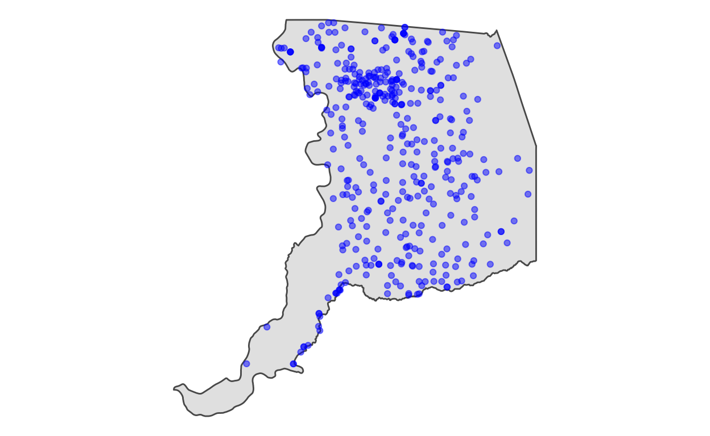
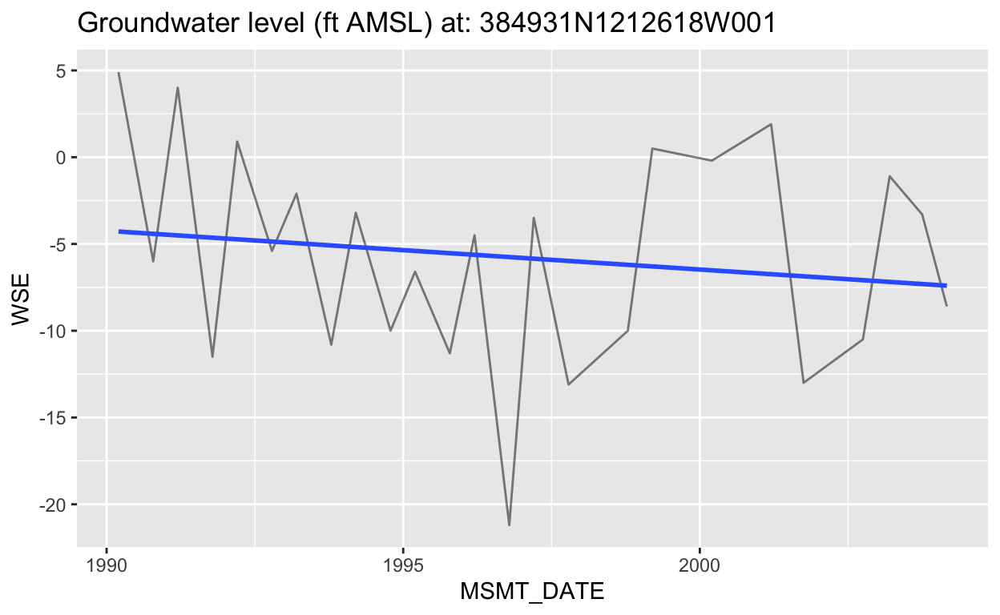
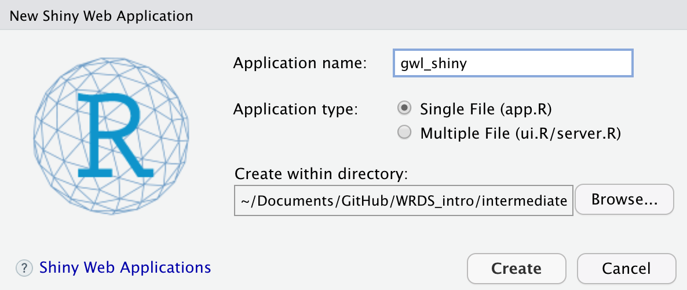
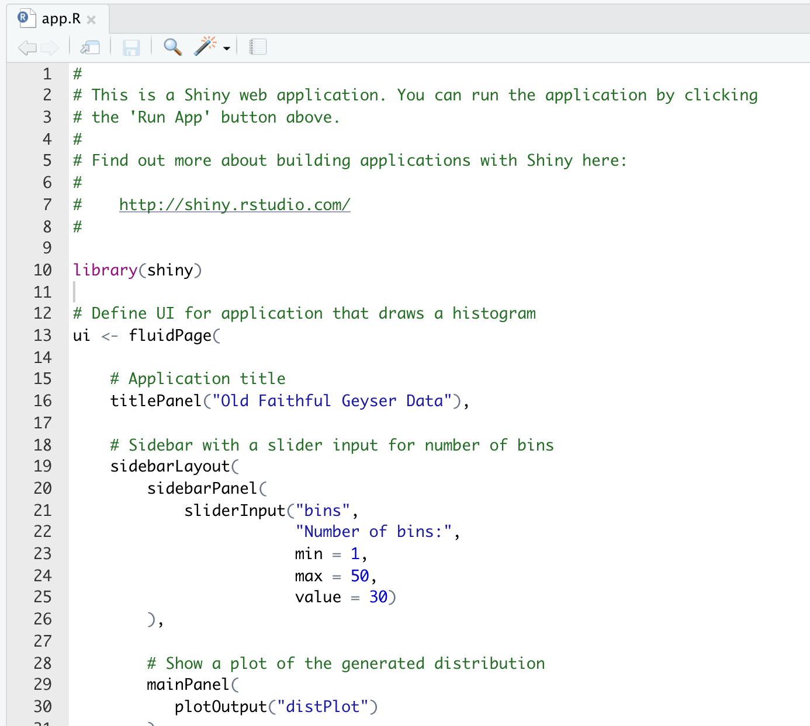
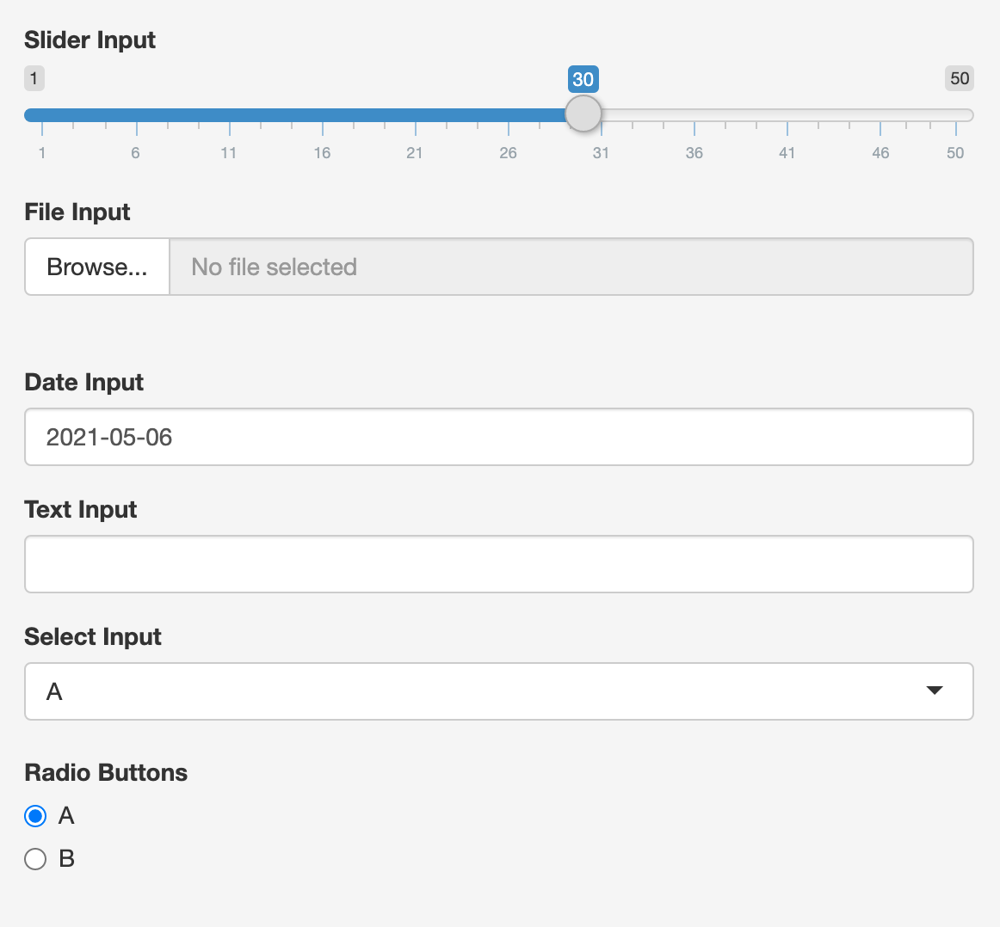
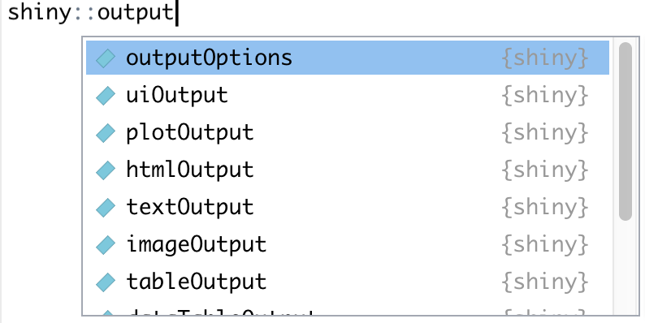
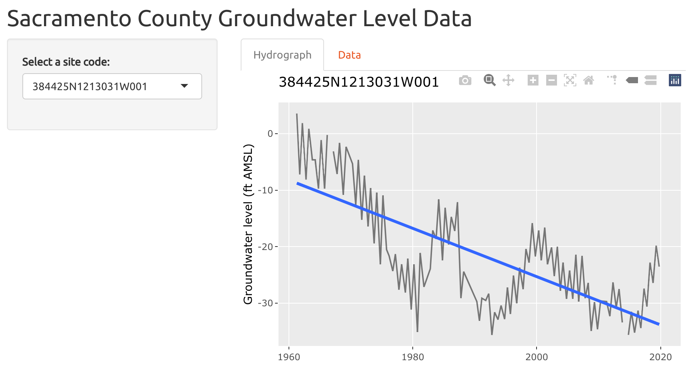

Learning objectives
- Understand what a Shiny App is and why you might want or need to build one
- Understand the basic structure of a Shiny App and common hiccups
- Discuss approaches to extend your Shiny skills
What is a Shiny App and Why is it useful?
According to the Mastering Shiny book:
Shiny is a framework for creating web applications using
Rcode. It is designed primarily with data scientists in mind, and to that end, you can create pretty complicated Shiny apps with no knowledge of HTML, CSS, or JavaScript.
Because they extend R-based analyses, interactive Shiny Apps have as many diverse niches and uses as the the R community itself, and it’s likely that you have come across a Shiny App in the wild before.
Shiny Apps are highly customizable, and allow R users to wrap existing code and data with an additional layer of interactivity using R code from the {shiny} package to better visualize, analyze, export, and more. This allows any user (even non-R users!) to interact with the data, providing a powerful way of exploring and understanding the data within the Shiny App.
Now that we know what a Shiny App is, a fundamental question that we need to answer is “when and why should I build a Shiny App?” Generally, you should create a Shiny App when you want to make results and/or data available to others, or when the dataset is complex enough to warrant a Shiny App to ease exploration. To provide a specific example, let’s examine a case study.
Case Study: Sacramento county groundwater elevation
Imagine you’re analyzing groundwater levels across California1 and want to assess groundwater elevation trends over time in Sacramento County. You may begin with an EDA to filter the data to Sacramento County, clean the data, and make some exploratory plots.
library(tidyverse)
library(here)
library(sf)
# read groundwater level data pre-filtered to Sacramento county
gwl <- read_csv(here("data", "gwl", "gwl_sac.csv")) %>%
st_as_sf(coords = c("LONGITUDE","LATITUDE"), crs = 4269)
# read sacramento county shapefile and reproject
sac <- st_read(here("data", "shp", "sac", "sac_county.shp"), quiet=TRUE) %>%
st_transform(4269)
# plot the groundwater levels at each monitoring site
gwl %>%
ggplot() +
geom_line(aes(MSMT_DATE, WSE, group = SITE_CODE), alpha = 0.5)
# slice the first station per group of groundwater level observations
# (see comment aside)
gwl_min <- gwl %>%
group_by(SITE_CODE) %>%
slice(1) %>%
ungroup()
# visualize sites on a map
ggplot() +
geom_sf(data = sac) +
geom_sf(data = gwl_min, alpha = 0.5, color = "blue") +
theme_void()

During the analysis, you realize you want to easily look at data by monitoring site, so you make a function that streamlines this.
# function that takes a site code and generates a plot
f_make_hydrograph <- function(data, site_code){
p <- data %>%
filter(SITE_CODE == site_code) %>%
ggplot(aes(MSMT_DATE, WSE)) +
geom_line(alpha = 0.5) +
geom_smooth(method = "lm", se = FALSE) +
labs(title = glue::glue("Groundwater level (ft AMSL) at: {site_code}"))
return(p)
}
# make a hydrograph for the first SITE_CODE
f_make_hydrograph(gwl, gwl$SITE_CODE[1])

Your supervisor requests figures from certain stations, and you find yourself re-running this function to generate them. You also have teammates that require subsets of these data per monitoring site, with specific columns in the output. You add a function that writes data to csv files to handle this task, but realize that this project is ongoing, and people will keep coming to you with requests for alternate combinations of plots or data. Also, the groundwater level data is sufficiently large and complex that you want to be able to view them all in one place.
One solution to automate the “data visualization exploration” and “data sharing” processes is to create a Shiny App.
In the sections that follow, we will create a Shiny App that allows users to easily select and visualize groundwater data at different monitoring stations, and export data for a selected site.
Basic Shiny App Structure
At the bare minimum, a Shiny App is an .R file or set of .R files with three components: a ui, server and runApp(). The runApp() function takes the ui and the server objects and runs the Shiny web application.
By design, Shiny Apps separate front and back end components of the web application. The ui stands for “user interface” and defines front-facing components that the user sees and interacts with, like plots, tables, sliders, buttons, and so on. The server holds the back-end logic that accepts input from the user, and uses these inputs to define what data transformations should occur and what is passed back to the frontend for the user to view and interact with.
In order to demonstrate a simple Shiny App, we will use a single file called app.R defines a ui and server. Afterward, we will also discuss approaches to modularize an app into separate files - this may be necessary if an app becomes sufficiently complex.
Creating a Shiny App
The most simple way to create an app within RStudio is to click File > New File > Shiny Web App….

By default, RStudio will create a new folder with a name you provide in your project directory2. Enter gwl_shiny as the “Application name” and click Create.

You should now have a folder called gwl_shiny in the project directory, which you can verify in the File Viewer Pane. Inside that folder should be a single file, app.R.

A default Shiny App is contained in this file. We can run all of the code to view the app on our local machine, or click the Run App icon in the top right corner of the code editor.
Scroll through app.R and notice that there is a ui object, a server object which is a function of input and output, and a runApp() function which takes the ui and server objects as input.
ui (frontend)
The ui defines what the user sees when they interact with the Shiny App. Generally speaking, the ui shows:
- control widgets (the interface) which allow the user to send commands to the
server
- output from the
server
Control widgets
Consider the following example App, which demonstrates a few of the control widget3 inputs available for Shiny Apps.
library(shiny)
ui <- fluidPage(
# sidebar with generic example inputs
sidebarLayout(
sidebarPanel(
sliderInput(
"i_slider", # control widget ID
"Slider Input", # label above the widget
min = 1,
max = 50,
value = 30
),
fileInput(
"i_file", # control widget ID
"File Input" # label above the widget
),
dateInput(
"i_date", # control widget ID
"Date Input" # label above the widget
),
textInput(
"i_text", # control widget ID
"Text Input" # label above the widget
),
selectInput(
"i_select", # control widget ID
"Select Input", # label above the widget
choices = c("A","B","C")
),
radioButtons(
"i_radio", # control widget ID
"Radio Buttons",# label above the widget
choices = c("A","B")
)
),
mainPanel("Look at all those inputs!")
)
)
# blank server logic - the App does nothing with
# control widget inputs and creates no output!
server <- function(input, output) {}
# run the Shiny app
shinyApp(ui = ui, server = server)

Chances are that you won’t use all of the control widget inputs available in any given Shiny App you build. The choice of inputs you use will depend on what information you want to present to the user, and how information they select with those widgets should modify data in the server.
Outputs
A ui with only control widgets (i.e., the App example above) is like having a keyboard without a monitor. You can change inputs by typing on the keyboard, but can’t see anything happen without a monitor! In this analogy, the monitor is a set of outputs. Your Shiny App users will spend a lot of time interacting with outputs, and most of our time spent designing and creating a Shiny App will go into creating outputs. To view default Shiny outputs, type shiny::output and see what comes up in tab complete. For example, plotOutput() is used to render plots, textOutput() is used to render text, and so on.

Each output in the ui takes as a first argument the “output id” as a character string, for example, plotOutput("my_plot") means a plotOutput() with an “output id” of "my_plot".
Fix the App
Every output in the ui should have a corresponding object rendered in the server. Thus, if we define a Shiny App with plotOutput("my_plot") in the ui, we need to assign a rendered plot to the object output$my_plot in the server. For practice, fix the following Shiny App. You’ll know you were successful if you see a plot when running the App.
library(shiny)
# user interface
ui <- fluidPage( plotOutput("plot") )
# server logic that draws a plot
server <- function(input, output) {
output$my_plot <- renderPlot({ plot(1:10) })
}
# Run the application
shinyApp(ui = ui, server = server)
Click for the Answer!
This very boring Shiny App illustrates a very critical concept. It has no control widget inputs, but it does have a matching output id and output object in the ui and server respectively.
The answer, therefore, is frustratingly simple: plotOutput("plot") should be plotOutput("my_plot").
library(shiny)
# user interface
ui <- fluidPage( plotOutput("my_plot") )
# server logic that draws a plot
server <- function(input, output) {
output$my_plot <- renderPlot({ plot(1:10) })
}
# Run the application
shinyApp(ui = ui, server = server)
server (backend)
If the ui control widgets are like the keyboard receiving inputs, then the server is the computer brain of the Shiny App that takes inputs, translates the information from the inputs (code that does something with the data input), and creates outputs, and finally sends these back to the ui where a user can interact or see the result.
Reactivity
Reactivity4 is a driving concept in Shiny App programming. The fundamental idea is that what happens in a Shiny App depends only on values that change, and parts of the App are interconnected such that when inputs change, these inputs trigger a re-evaluation of code that regenerates outputs, until the inputs change again, and so on.
Render objects
In the ui we saw that each output ID created by the server had a unique ID name and was wrapped in an “output” function. For example, plotOutput("my_plot") had an object in the server called output$my_plot that was assigned the result of a renderPlot({ }) function, and inside that function was the code for our plot. Each “render” function has a corresponding “output” function (e.g., renderText() and textOutput() go together). To view some of the default “render” functions, type shiny::render and view the options available in the tab complete popup.

Putting it all together
Let’s take what we’ve covered and put it all together to address the Case Study introduced above. We will build a simple Shiny App with a plotOutput() and DT::dataTableOutput() that shows the hydrograph and data for a user-specified monitoring point. We’ll also include data download buttons within the data table and demonstrate how to make the plot interactive with {plotly}.
library(shiny)
library(shinythemes)
library(tidyverse)
# load sac county groundwater data and sac county polygon
gwl <- read_csv(here::here("data", "gwl", "gwl_sac_shiny.csv"))
# ------------------------------------------------------------------------
# user interface
ui <- fluidPage(
# change default theme to "united"
theme = shinytheme("united"),
# application title
titlePanel("Sacramento County Groundwater Level Data"),
# sidebar with a dropdown input for site_code
sidebarLayout(
sidebarPanel(
selectInput("site_code",
"Select a site code:",
choices = unique(gwl$SITE_CODE))
),
# tabs with hydrograph and data table
mainPanel(
tabsetPanel(
tabPanel("Hydrograph", plotly::plotlyOutput("gwl_plot")),
tabPanel("Data", DT::dataTableOutput("gwl_data"))
)
)
)
)
# ------------------------------------------------------------------------
# define server logic to plot a hydrograph and create data table
server <- function(input, output) {
# --------------------------------------------------
# create hydrograph
output$gwl_plot <- plotly::renderPlotly({
# draw the ggplot based on the "site_code" user input
p <- filter(gwl, SITE_CODE == input$site_code) %>%
ggplot(aes(MSMT_DATE, WSE)) +
geom_line(alpha = 0.5) +
geom_smooth(method = "lm", se = FALSE) +
labs(title = input$site_code,
x = "", y = "Groundwater level (ft AMSL)")
# render the plotly object
plotly::ggplotly(p)
})
# --------------------------------------------------
# create data table
output$gwl_data <- DT::renderDataTable({
# draw the plot based on the "site_code" user input
DT::datatable(
filter(gwl, SITE_CODE == input$site_code),
extensions = 'Buttons',
options =
list(dom = 'Bfrtip',
buttons = c('copy', 'csv', 'excel', 'pdf', 'print'))
)
})
}
# ------------------------------------------------------------------------
# Run the application
shinyApp(ui = ui, server = server)
Let’s break down what we just did.
Before anything else, we loaded the packages we needed5 and our groundwater level data
gwl.Next, in the
ui, we added a custom theme from the{shinythemes}package to change the default appearance of our App. We used aselectInput()control widget with a ID"site_code"and choices equal to the unique values ofSITE_CODEs in thegwldataframe. Then, in themainPanel()we added atabsetPanel()with twotabPanel()tabs: one with aplotly::plotlyOutput()plot, and another with aDT::dataTableOutput()output.Finally, in the
server, we rendered plotly and dataTable objects and saved them to theoutputobject under the output IDs"gwl_plot"and"gwl_data". These objects are displayed in theui.
And this is the resulting Shiny App:

Share and deploy a Shiny App
Up until now, we’ve been using our own computer to run our Shiny App example. How do we share a Shiny App with others?
The fastest and simplest way to share your Shiny app with another R user is to share the app.R file and data dependencies. They can open the file and run the app on their computer as we’ve been doing in this module. However, we may want to share our app with a wider, non-technical audience over the internet. When we move a Shiny App from our computer onto a web server so that it can be shared over the internet, we deploy the app.
There are a range of services that allow us to deploy Shiny Apps that range from simple to complex, and costly to inexpensive.
A relatively painless way to deploy is via shinyapps.io, run by RStudio. A free tier is available, and provides a limited number of “live hours” per month for users to interact with your App. Paid tiers afford more “live hours” per month, a faster web server, and features like password protection.
{shiny} is open source, and in that spirit, the open source Shiny Server can be installed on any local or cloud server (e.g., AWS, Google Cloud, Microsoft Azure). If you don’t have a background in cloud computing, your System Administrator (Sys Admin) can help you move your App onto a cloud or company server6. Although this option requires more manual setup than shinyapps.io, it offers a non-commercial alternative, and perhaps more control depending on your needs.
Extending Shiny
Congratulations! You’re now familiar with the basics of {shiny}. This module is just the tip of the iceberg. There are so many ways to extend {shiny}, and the opportunities for customization of Shiny Apps are vast. We recommend the following ways to increase your knowledge in this domain:
- find open source Shiny Apps that you admire, clone their source code to your machine, run the App, and change things so you can explore how the App works. Borrow bits of code in new Apps you create
- find a side project that’s a good candidate for a Shiny App and build one - it doesn’t need to be work-related; in fact, it might be more fun to work on something tangential that you find interesting
- explore the free online books and guided video tutorials in the links below
Additional Resources
Below are a few freely available books, presentations, and locations to find Apps online:
- Mastering Shiny: Free online book that serves as an authoritative guide on how to build, maintain, deploy, and customize R Shiny Apps. Material goes well beyond what is presented in this module.
- Guided Shiny Video tutorials: Series of guided video tutorials with live-code demos and slides that explain the fundamentals of R Shiny Apps and how to use them.
- RStudio Shiny Gallery: Examples of Shiny Apps highlighting different ways Shiny has been used, with links to source code
Previous module:
4. Interactive Visualization Next module:
6. Iteration
For instance, imagine you are using the California Department of Water Resources’ Periodic Groundwater Level Database used throughout this course.↩︎
If using
{here}, find your project directory by runninghere().↩︎A control widget is a tool that allows users to send information from the frontend
uito the backendserver. Different widgets allow different types of information to pass between theuiandserver. Notice that the first argument to each control widget is the unique ID or name of that widget. IDs must be unique, and are accessed in the server in a named list calledinput. For example, thesliderInput("bins")has the unique ID"i_slider"and the user-input value to this widget can be accessed from within the server withinput$i_slider.↩︎A comprehensive treatment of reactive programming in Shiny is beyond the scope of this module, but we recommend reading this article, and this book section to learn more about reactive graphs when you decide to start building more complex Shiny Apps.↩︎
Although we don’t cover it in this module, you can also split your App into 3 files:
ui.R(for theui),server.R(for theserver), andglobal.R(loads all App dependencies). When an App becomes big and complex, splitting it up into smaller parts can make it easier to develop.↩︎The Shiny Server Administrator’s Guide](https://docs.rstudio.com/shiny-server/)) provides detailed documentation geared towards System Administrators that will help in deploying a Shiny App.↩︎